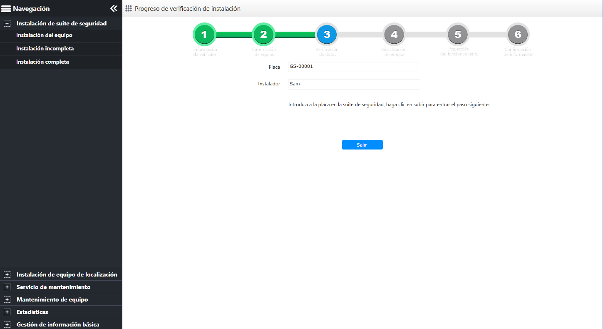

| 1. | El instalador en sitio ingresa el número de placa en el suite de seguridad y hace clic en Cargar como se muestra a continuación.

Fig 96 Verificación del vehículo Una vez que la carga se realiza con éxito, pasará automáticamente a la siguiente interfaz de “Inicialización de equipo”.
|
| 2. | (Opcional) Haga clic en 〖Salir〗 para interrumpir esta instalación. |